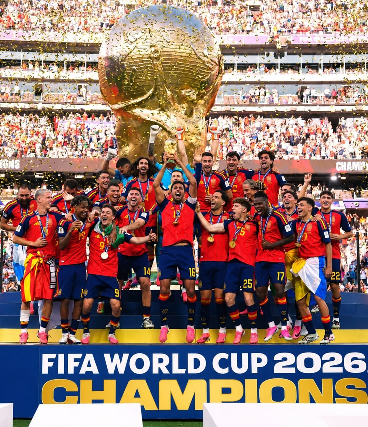
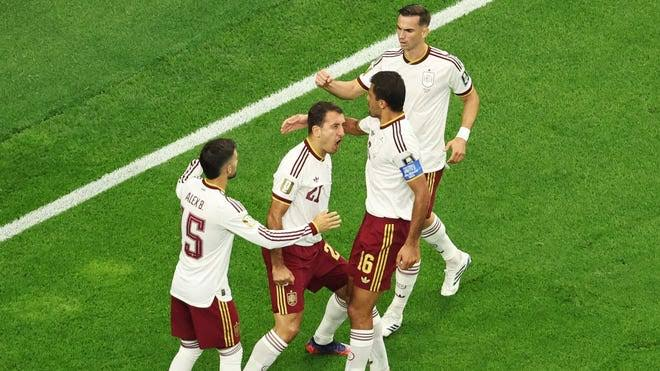
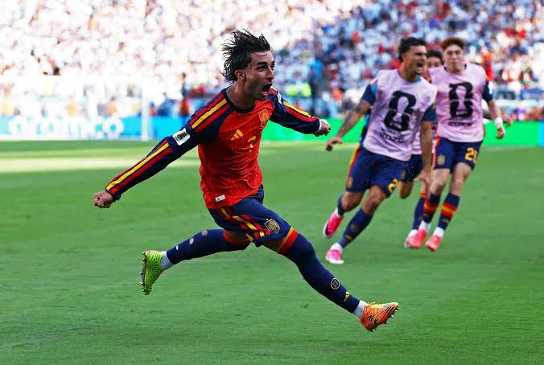

1ª Colocada / Campeã
Espanha

Sobre o País
A Espanha é uma nação europeia com uma cultura vibrante, conhecida por sua rica herança artística, culinária extraordinária, praias deslumbrantes e cidades históricas como Madri e Barcelona. Com uma paixão arrebatadora pelo esporte, o país se consolidou como um dos maiores exportadores de talento futebolístico global, mantendo ligas competitivas que atraem bilhões de telespectadores.
Resumo Histórico na Copa do Mundo
A consagração máxima do futebol espanhol ocorreu em 2010, na histórica Copa do Mundo da África do Sul. Sob a liderança do técnico Vicente del Bosque, a seleção conhecida como "La Roja" encantou o mundo com o estilo "Tiki-Taka", caracterizado pela posse de bola obsessiva, passes rápidos e movimentação constante. Em uma final eletrizante contra a Holanda, o meio-campista Andrés Iniesta marcou o lendário gol do título aos 116 minutos da prorrogação, garantindo a primeira estrela da Espanha. Com jogadores lendários como Xavi, Iniesta, Casillas e Puyol, essa geração entrou definitivamente para o panteão dourado do futebol mundial.
Momentos Icônicos


